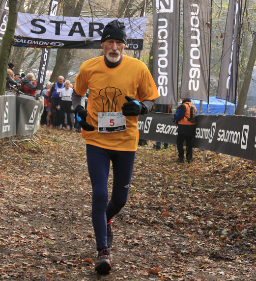
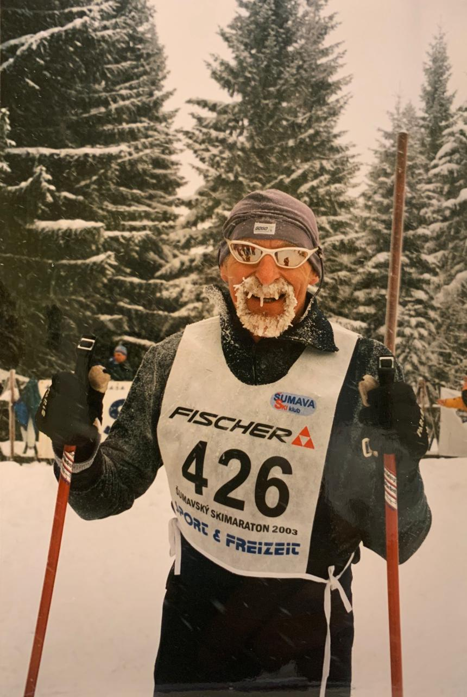
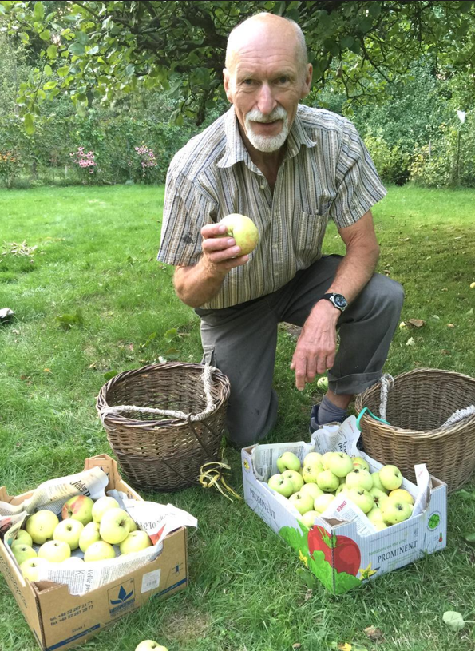
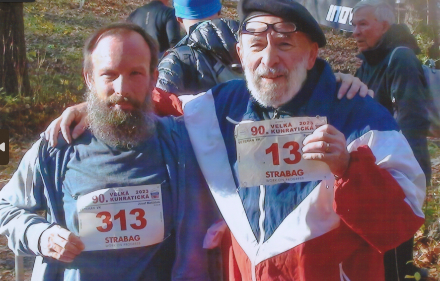

Veterán
Velké kunratické
Časopis určený veteránkám, veteránům a všem příznivcům legendárního závodu
Číslo 7 / listopad 2024

Ivan Šperling se stal teprve pátým běžcem, který úspěšně zvládl 60 startů ve Velké kunratické. Další start už bohužel nepřidá, náhle a nečekaně zemřel dne 10. září 2024.
60 kunratických startů Ivana Šperlinga
Pro Ivana Šperlinga byla loňská Velká kunratická dvakrát jubilejní. Zatímco 90. ročník slavného běhu oslavili svou účastí všichni startující, Ivan v Kunraticích zaznamenal i své osobní jubileum, a to jubileum obdivuhodné a zcela mimořádné. V okamžiku, kdy proběhl cílem, se stal teprve pátým běžcem v devadesátileté historii Velké kunratické, který tuto trať absolvoval šedesátkrát. Ve svých třiaosmdesáti letech byl stále v obdivuhodné kondici a nikdo, ani on sám, nepochyboval o tom, že tento počet v dalších letech ještě navýší.
Má žádost o rozhovor pro časopis Veterán VK ho potěšila a domluvili jsme se, že koncem září zavolám, abychom upřesnili termín našeho setkání. K němu však, bohužel, nedošlo. Všechno změnila zpráva, kterou jsem dne 13. září obdržel z Ivanovy mailové adresy (se svolením odesílatele zde uvádím její podstatnou část):
Dobrý den, tady Petr Šperling, syn.
Tatínek Ivan zemřel 10.9. v Krčské nemocnici, pár metrů od Krčského lesa, kam chodíval běhat a kde se každoročně rád zúčastňoval jeho oblíbené Velké Kunratické. Váš zájem o článek ho moc potěšil a těšil se na vaše setkání. Škoda, že se ho nedožil. Našel jsem na počítači fotku, kterou asi pro vás připravil a posílám ji v příloze. Myslím, že bude šťastný, když o něm článek napíšete.
Děkuji, Petr Šperling
Rád plním Ivanovo přání a věřím, že článek o něm potěší všechny čtenáře Veterána VK. Na otázky, týkající se jeho tatínka, odpověděl v několika mailech syn Petr.
Můžete napsat několik základních informací o životě tatínka Ivana?
Ivan Šperling se narodil v Praze, dětství prožil na Vinohradech, po svatbě bydlel s rodinou v centru Prahy, od roku 2000 v Krči. Vystudoval ČVUT, strojírenství, později se specializoval na stroje v papírenském průmyslu. Ještě v důchodovém věku si občas přivydělával odbornými technickými překlady, zejména z angličtiny a do angličtiny, trochu i z ruštiny. Oženil se a měl dvě děti – mě a sestru. Rodiče letos v červnu oslavili 52 let společného života.
Časopis je určen primárně účastníkům Velké kunratické. Proto se zeptám na to, jak tatínek sportoval a jak se mu podařilo být tak aktivní i v seniorském věku.
Tatínkovou obrovskou vášni bylo kolo. Na kolo vyrážel takřka každý volný den, kdy bylo alespoň trochu příznivé počasí, tj. když nepršelo nebo nesněžilo. Po obědě se šel „projet“, což zpravidla znamenalo cyklovýlet 50 až 80 km, velmi oblíbenou měl trasu podél Vltavy směrem k Vranému nad Vltavou. Na chalupě jezdil s oblibou nakupovat na kole do České Lípy, cca 10 km od naší chalupy. Občas jsme zjistili, že po prvním nákupu ještě něco chybělo, což táta v takovém případě s potěšením využil jako záminku k další projížďce a vyrazil na kole opět do České Lípy, aby doplnil, co bylo potřeba.
Vyprávěl mi, že někdy v 70. letech se zúčastňoval nějakého pravidelného cyklistického závodu v pražských ulicích, snad v oblasti kolem Anděla. Závod se konal po setmění za světla lamp a jednou se dokonce dostal na bednu.
Měl velkou vášeň i pro běžky, běžel Krkonošskou sedmdesátku, Jizerskou padesátku a Šumavský maraton. Rodiče trávili každoročně jeden až dva týdny běžkařením na Šumavě, měli oblíbené ubytování na Horské Kvildě. Věnoval se i běhu, dříve judu, hokeji, vyzkoušel řadu dalších sportů. Na chalupě měl jeden z prvních windsurfingů v České republice.
 
Kterých svých sportovních výkonů si tatínek nejvíce vážil?
Myslím, že ze všech sportovních úspěchů si asi nejvíce vážil toho počtu startů na Velké kunratické, kde v posledních letech běhal s číslem 2 v první dvojici s Josefem Vonáškem. Velkou kunratickou si každý rok hned v lednu vyznačil v kalendáři a hlídal si, aby neměl v programu kolizi s jejím termínem. Běhal ji po celý život a nebýt té nešťastné zdravotní komplikace s tragickým koncem, zcela jistě by letos stál opět na startu.
Jaké bylo vaše dětství s tatínkem? Vedl vás ke sportu a dařilo se mu to?
Nás děti vedl od malička ke sportu, učil nás jezdit na kole, kolečkových bruslích, plavat, v zimě nás bral na hory. Jako děti jsme jednou běželi dětskou, zkrácenou verzi Velké Kunratické. Aby mohla moje sestra jet na lyžařský výcvik, udělal si instruktorský kurz a jel s ní na výcvik jako instruktor, protože jí lékařka v tu dobu kurz nedovolila a toto byla jediná možnost, aby se sestra mohla zúčastnit. Já teď bydlím s rodinou v jižních Čechách a také běhám a jezdím na kole, občas jdu na některý jihočeský běžecký nebo triatlonový závod.
Co nám prozradíte dalšího z tatínkova života? Jaké měl zájmy kromě sportu?
Před sametovou revolucí jsme jako rodina přes prázdniny několikrát jeli Wartburgem do Bulharska k moři. Spali jsme v autě a ve stanu. Pak, když se mohlo cestovat, tak rodiče procestovali i další země, podívali se i do USA. Sestra strávila několik let v Austrálii, Indii a na Srí Lance a rodiče za ní i do těchto zemí letěli na návštěvu.
Velkým koníčkem byla pro tatínka chalupa v severních Čechách. Původní neobyvatelnou stodolu vlastními silami postupně přestavěl (s přestavbou začal zhruba před 50 lety a na přestavbu použil i tvárnice vlastní výroby – cihly byly tehdy nedostupné) na útulný domek, kde moji rodiče teď v důchodu trávili většinu léta, dříve alespoň všechny volné víkendy, a my, děti, většinu školních prázdnin. Plno nábytku (postele, poličky, skříňky atd.) vyráběl také sám, aby mohl nejlépe využít prostory na chatě. Práce se dřevem ho bavila a všechno měl vždy pečlivě naplánované i provedené a výsledek byl často nápaditý a vždy maximálně využitelný. Ve zvelebování chalupy stále pokračoval až do poslední chvíle. Samozřejmostí byla i starost o zahradu a ovocné stromy. Péče o chalupu a zahradu ho naplňovala a také udržovala ve skvělé fyzické kondici, např. ještě v srpnu tohoto roku zde postavil nový plaňkový plot. Myslím, že i toto byla součást jeho přípravy, která přispívala k jeho sportovní formě a vitalitě. LS
Jednou a dost! Příběhy běžců, kteří se na start Velké kunratické nevrátili
Výjimky, které potvrzují pravidlo
Evžen Rošický ve svém článku v Haló novinách dne 16. listopadu 1937 o Velké kunratické napsal: „Velká kunratická je velký běh; kdo ho běží, proklíná ty, co ho vynašli – ale příští rok přijde zase.“ Rošický popsal teprve čtvrtý ročník našeho závodu a možná ani on sám tehdy netušil, jak velkou pravdu napsal. Nejen pro zakladatele, ale i pro desítky, ba stovky účastníků se Velká kunratická stala celoživotní záležitostí a nedílnou součástí jejich životů. Ostatně, vy, kteří čtete tento příspěvek, jste toho živým důkazem. Samozřejmě, výjimky se našly: jsou běžci, kteří si Velkou kunratickou zaběhli jednou jedinkrát – a více se na startu nikdy neukázali. Dnes se podíváme právě na tyto výjimky.
Štrekař Josef Hron
Nejprve dejme slovo Josefu Mocovi, jednomu ze zakladatelů VK a veteránu s 44 starty: „Je známé rčení, že, kdo jednou běžel Velkou kunratickou, přijde zas. Ale výjimka jménem ing. Josef Hron potvrzuje pravidlo. Pepík byl ve třicátých a čtyřicátých letech jedním z našich nejlepších štěrkařů. Kunratická ale jakoby ho netáhla. Až jednou, bylo to tuším v roce 1939, se nechal přemluvit. Po startu a zdolání prvního kopce a vyšplhání na Hrádek se dostal do čela a pak, na dlouhých rovinkách, kde se trať obrací, neběžel, kam měl, ale namířil si to rovně do Kunratic. Do cíle sice přiběhl, ale z opačné strany. Rozzlobený dodal, že už ho na Velké kunratické nikdy neuvidíme. A slovo dodržel.“ (Vzpomínku Josefa Moce jsme přetiskli z ročenky k 50. ročníku 1983).
Vítězové, kteří se nevrátili
Velkou kunratickou si vyzkoušela řada skvělých běžců středních a dlouhých tratí. Mnozí si trať zamilovali a pravidelně se vraceli, případně stále ještě vracejí, našli se však i takoví, kteří si řekli „jednou a dost!“ Důvody mohly být různé: obava ze zranění, podzimní termín nepříliš vhodný pro vrcholové závodění, narušení přípravy na další sezonu, nevhodný běh pro danou závodní trať, ale třeba též (zde se odvážím spekulovat) obava z neúspěchu v souboji s méně známými běžci, ale specialisty na tuto trať. Poslední tvrzení má reálné jádro: vím, jak se v 50. letech reprezentační běžci obávali (a právem!) Karla Šerpána. Někteří se však do Kunratic nevrátili, přestože ve své premiéře dokázali zvítězit.
V roce 1947 to byl Václav Čevona, skvělý mílař, který v následujícím roce na olympiádě v Londýně obsadil vynikající 4. místo v běhu na 1500 metrů. 14. ročník Velké kunratické vyhrál s přesvědčivým náskokem a časem 12:55 dokonce vytvořil traťový rekord, o čtvrt minuty překonal legendárního Jaroslava Obešla. Vícekrát se na start Velké kunratické nepostavil.
V 21. ročníku VK v roce 1954 zvítězil Pavel Kantorek výkonem 12:40. Bylo to krátce před tím, než zahájil svou hvězdnou kariéru maratonce, kterou vyšperkoval účastí na třech olympiádách – poprvé společně s Emilem Zátopkem v Melbourne 1956 (27. místo), poté v Římě 1960 (14. místo) a nakonec s Václavem Chudomelem v Tokiu 1964 (25. místo). Také jeho start v Kunraticích zůstal osamocen.
V 29. ročníku v roce 1962 zvítězil Petr Hellmich v novém traťovém rekordu 12:05. Ani tento talentovaný litvínovský běžec, jehož nejlepším výkonem na dráze bylo 13:55 na 5000 metrů, se v Kunraticích vícekrát na start nepostavil.
Rozdílný přístup našich elitních mílařů
Špičkovým mílařům by trať Velké kunratické měla sedět. Jsou silní a šikovní, aby si poradili s ostrými výběhy i náročnými seběhy, a dostatečně rychlí i vytrvalí pro dosažení kvalitních časů na náročné a nepříliš dlouhé trati. Dobrých mílařů se na start Velké kunratické postavila celá řada a je zajímavé, že jak rozdílná byla jejich úspěšnost i vztah a přístup k našemu závodu. Nejprve dva borci, kteří do dnešního článku vlastně nepatří, nejsou totiž oněmi výjimkami, jimiž se zde zabýváme.
Jaroslav Obešlo (mistr republiky na 1500 m v roce 1935 časem 4:04,6) se k běhu vracel opakovaně a stal se legendou závodu s 6 vítězstvími a 53 starty. Nejlepšího výkonu docílil v roce 1943, čas 13:10 byl v té době traťovým rekordem. Naposled běžel v roce 1987.
Podobně se k závodu vracel světový rekordman na 1500 metrů Stanislav Jungwirth, V ročence k 60. ročníku (1993) se píše, že na VK startoval až po ukončení aktivní činnosti na dráze. Není to pravda, z výsledkových listin vyčteme, že Stanislav Jungwirth startoval v Kunraticích už dávno před tím, než se stal světově proslulým mílařem. Poprvé v roce 1949, kdy časem 13:18 obsadil 3. místo, pak v roce 1958 zaběhl čas 12:52 a skončil na 7. místě. To bylo pouhý rok po jeho světovém rekordu 3:38,1 z Houštky a v Kunraticích zřejmě neběžel „na krev“, přece jen musel brát ohled na svou kariéru dráhového běžce. S Velkou kunratickou se rozloučil ze zdravotních důvodů začátkem osmdesátých let a počet jeho startů se zastavil na čísle 13.
Naopak pro další tři české mílařské rekordmany platí ono zmíněné „jednou a dost!“.
O Václavu Čevonovi, vítězi z roku 1947, už byla řeč. Svého životního úspěchu dosáhl krátce poté na olympiádě v Londýně a od té doby dostaly před Velkou kunratickou trvale přednost závody na dráze.
Dalším v pořadí byl Josef Odložil. Také on se zúčastnil Velké kunratické ještě před tím, než se propracoval mezi nejlepší světové mílaře. Trať si zaběhl v roce 1960 a časem 12:22,4 skončil šestý. V dlouhodobé tabulce nejlepších výkonů však tento čas nenajdeme, byl to jeden z dvou ročníků (tím druhým byl ročník 1966), kdy došlo k velkým nesrovnalostem mezi naměřenými časy, což vedlo nakonec k tomu, že všechny výkony byly anulovány. Životního úspěchu dosáhl Josef Odložil o čtyři roky později na olympiádě v Tokiu, kde získal stříbrnou medaili v běhu na 1500 metrů, rok na to překonal světový rekord v běhu na 2000 metrů. Do Kunratic se nikdy nevrátil.
Třetím rekordmanem na 1500 metrů, který se zúčastnil Velké kunratické pouze jedinkrát, byl Jan Kubista. V roce 1983 zaběhl čs. rekord 3:34,87 a v témže roce se postavil na trať slavného 50. ročníku. Ostudu mílařům neudělal, zaběhl skvělý čas 11:42,1, ale protože se trefil do ročníku, kdy mezi jeho soupeři stály kunratické hvězdy Vlastík Zwiefelhofer (11:23,9) a Zdeněk Kurka (11:38,7), stačilo to jen na celkové 3. místo. V roce 1988 si vybojoval účast na OH v Soulu, ale na start v Kunraticích se už nepostavil.
Pozoruhodnou bilanci má ve Velké kunratické další vynikající mílař, opavský Milan Švajgr. Čtyřnásobný mistr republiky z let 1949 až 1953 se závodu zúčastnil čtyřikrát, dvakrát byl druhý a dvakrát zvítězil, pokaždé v novém traťovém rekordu. Jeho výkon 12:13,6 z roku 1950 vydržel až do roku 1959, kdy jej časem 12:10 překonal Vojtěch Hec. Po svém druhém triumfu Milan Švajgr už v Kunraticích vícekrát nestartoval. Jaký byl důvod ukončení účasti na trati, která mu evidentně vyhovovala, o tom dnes můžeme už jen spekulovat.
Tragický konec Karla Fojtíka
Zatímco všichni výše uvedení běžci si mohli vybrat, zda se dalšího ročníku zúčastní nebo nezúčastní, jiní si, bohužel, vybrat nemohli. Příběh Karla Fojtíka, vítěze prvního ročníku v roce 1934, jsme si nechali na samotný závěr našeho ohlédnutí za slavnými jmény, která psala historii Velké kunratické.
Karel Fojtík vyhrál první ročník Velké kunratické v roce 1934 a časem 13:14 stanovil základní traťový rekord, který vydržel až do 10. ročníku. V dalších startech mu zabránila tragická nehoda, která měla fatální následky a ukončila Fojtíkovu sportovní kariéru. Podrobnosti o této nešťastné události vyhledal v dobovém tisku veterán VK Karel Schestauber: „O Karlu Fojtíkovi se mi podařilo zjistit následující: V roce 1934 běhal za oddíl Star Praha a dosáhl času 16:04 na 5 km, tímto výkonem byl na 5. místě v národních celoročních tabulkách. V říjnu 1934 přestoupil do Vysokoškolského sportu Praha. Za VS Praha byl v listopadovém Běhu Stromovkou (krátce po Velké kunratické) druhý za Koščakem (SK Slavia Praha) a díky tomu družstvo VS Praha vyhrálo soutěž týmů. V následujícím roce při přeboru v silničním běhu z Lán do Roudnice mu bylo 22. dubna 1935 v Roudnici způsobeno trestuhodnou neopatrností doprovázejícího motocyklisty vážné zranění. (Citace z časopisu Atlet VS 5/1935).“
Otazníky kolem prvního vítěze Velké kunratické
| Věrohodnost tragické zprávy, převzaté z dobového tisku, se zdá nezpochybnitelná. Tím větší záhadou je následující informace, která se objevila v časopise Ruch č.47/1947 a poté dokonce dvakrát v ročenkách věnovaných 20. a 25. ročníku Velké kunratické v letech 1953 a 1958. Ve všech třech případech je uvedeno, že Karel Fojtík zahynul na barikádě při Pražském povstání v květnu 1945. Přitom je zajímavé, že všechny tři články psali lidé, kteří Fojtíka osobně znali: v Ruchu 1947 to byl Josef Moc, jeden ze zakladatelů VK (účastník 1. ročníku), článek v ročence 1953 napsal Alois Kreuzer, rovněž zasloužilý veterán (poprvé běžel VK v roce 1935), autorem ročenky 1958 byl Eman Černý, dlouholetý ředitel Velké kunratické a hlavní organizátor předválečných, válečných i řady poválečných ročníků. Jde o dezinformaci? Nebo snad šlo o jiného Fojtíka? Kdyby snad někdo z čtenářů mohl vnést do této záležitosti jasno, budeme velice vděčni a případné doplňující informace rádi zveřejníme. | LS |
Poslední rozloučení s panem Emilem Pospíšilem
Dne 27.8.2024 se v Malé obřadní síni krematoria Strašnice konalo rozloučení s panem Ing. Emilem Pospíšilem. Zprávu jsem dostal od dětí Emila Pospíšila – Jany, Zorky a Vítka. Přetiskuji pár slov z Vítkova mailu. „V sobotu 17. 8. 2024 náš tatínek zemřel. Netrpěl a do poslední chvíle byl v dobré kondici fyzické i duševní, ještě ten den byl na procházce. Měl velkou radost z článku ve Veteránu VK, vyšel ještě včas a byl pěknou tečkou za tátovým životem.“ Dodejme, že pan Emil Pospíšil se dožil požehnaného věku 100 let a 3 měsíce. Čest jeho památce!
Na historický kvíz z VVK č. 6 nikdo nereagoval
Otázkami z historického kvízu z VVK č. 6 (na straně 12) jsme se pokusili vtáhnout čtenáře (aspoň ty, kteří se zajímají o historii Velké kunratické) k aktivní spolupráci. Pokus to byl, bohužel, neúspěšný – nikdo na naše otázky nezareagoval. Uznáváme, že otázky nebyly snadné a ke správným odpovědím bylo nutné prolistovat předchozí čísla Veterána VK, případně nahlédnout do starých ročenek Velké kunratické, každý však tuto možnost nemá. Zájemcům o historii VK dáme ještě čas a správné odpovědi otiskneme v příštím čísle Veterána VK.
Startovní listina veteránů 91. Velké kunratické – 2024 (1/7)
č. Jméno Startů Nar. 2019 2020 2021 2022 2023
| 1 | Vonášek Josef | 64 | 1937 | 42:44,8 | 40:57,3 | 42:13,9 | 46:19,3 | 55:10,2 |
| 2 | Pohorský Ivan | 58 | 1944 | 28:16,0 | 26:20,1 | 31:23,4 | 34:34,0 | 33:42,7 |
| 3 | Čech Karel | 58 | 1945 | 31:51,5 | 35:03,5 | 37:55,3 | 38:34,3 | 41:00,5 |
| 4 Bednář Jaroslav | 56 | 1939 | 30:07,5 | 31:22,1 | 34:01,4 | 34:56,6 | - | |
| 5 Sadil Zbyněk | 55 | 1942 | 29:20,2 | - | 35:39,9 | 37:13,1 | 34:34,2 | |
| 6 Babánek Karel | 55 | 1947 | 24:45,5 | 25:38,9 | 26:08,3 | 27:40,3 | 29:00,3 | |
| 7 Novotný Jan | 54 | 1945 | 28:15,4 | 25:52,2 | 27:31,9 | 28:35,7 | 35:11,0 | |
| 8 Pasler Jiří | 53 | 1946 | 23:40,6 | 27:54,6 | 26:01,8 | 28:39,3 | 32:44,1 | |
| 9 Klaus Jindřich | 52 | 1944 | - | - | 34:56,0 | - | 36:00,3 | |
| 10 Šimon Miloš | 52 | 1944 | 25:04,2 | 24:44,4 | 26:46,3 | 26:18,1 | 27:24,3 | |
| 11 Klimánek Miloslav | 52 | 1947 | 28:10,8 | 30:17,3 | - | 33:57,3 | 32:50,4 | |
| 12 Ezechiáš Michal | 52 | 1952 | 21:12,8 | 23:30,0 | 23:09,2 | 24:44,6 | 26:37,3 | |
| 13 Matiášek Petr | 51 | 1946 | 23:23,3 | 22:15,0 | 23:16,6 | 24:18,5 | 26:30,5 | |
| 14 Polák Pavel | 51 | 1946 | 18:56,8 | 21:06,0 | 23:51,8 | - | 24:14,2 | |
| 15 Drška Milan | 51 | 1951 | 24:47,3 | 27:21.0 | 26:08,7 | 27:00,0 | 29:03,8 | |
| 16 Sysel Zdeněk | 51 | 1952 | 23:34,2 | 27:07,7 | 24:41,9 | 25:04,5 | 26:50,1 | |
| 17 Sedlák Luděk | 51 | 1954 | 23:40,9 | 22:03,2 | 30:29,6 | 27:08,5 | 24:32,4 | |
| 18 Ulrich Josef | 50 | 1937 | 29:33,3 | 29:20,1 | 30:25,0 | 33:15,1 | 36:37,9 | |
| 19 Novák Pavel | 50 | 1948 | 43:42,5 | 42:32,4 | 42:54,1 | 51:32,2 | 50:14,6 | |
| 20 Laciga Zdeněk | 50 | 1952 | 17:47,9 | 18:49,5 | 21:34,6 | 20:05,1 | 20:35,8 | |
| 21 Poustecký Jan | 50 | 1954 | 25:01,3 | 26:28,0 | 28:06,1 | 28:19,5 | 29:57,6 | |
| 22 Novák Pavel | 49 | 1953 | 19:24,9 | 19:53,8 | 21:22,1 | 21:27,8 | 25:22,4 | |
| 23 Kočí Jiří | 49 | 1954 | 35:19,1 | 35:32,4 | 35:42,0 | 38:14,9 | 47:28,2 | |
| 24 Ge Evžen | 49 | 1954 | 29:53,8 | 29:15,4 | 38:46,1 | 33:36,8 | 33:43,2 | |
| 25 Moravec Karel | 48 | 1949 | 25:38,8 | 27:13,6 | - | 28:25,2 | 29:23,0 | |
| 26 Hejtmánek Jan | 48 | 1951 | 19:54,6 | 20:39,6 | 21:03,6 | 23:37,7 | 23:19,5 | |
| 27 Pícha Tomáš | 48 | 1952 | 25:59,9 | 30:04,4 | 30:02,5 | 32:44,7 | 32:35,3 | |
| 28 Pechek František | 48 | 1953 | 17:45,1 | 18:31,5 | 19:40,3 | 19:45,4 | 21:03,8 | |
| 29 Smrčka Miloš | 48 | 1954 | 14:54,3 | 17:24,2 | 15:54,8 | 16:03,2 | 17:16,7 | |
| 30 Podroužek Vladimír | 48 | 1955 | 20:19,8 | 22:00,6 | 23:23,7 | 24:39,8 | 27:05,7 | |
| 31 Řehola Jiří | 48 | 1956 | 30:23,7 | 28:45,5 | 27:14,1 | 28:24,6 | 29:23,0 | |
| 32 Peterka František | 47 | 1949 | 23:16,2 | - | - | - | 26:41,1 | |
| 33 Kolský Alexander | 47 | 1950 | 27:04,5 | 28:20,3 | 29:14,0 | 30:47,8 | 30:32,3 | |
| 34 Růžička Milan | 47 | 1955 | 18:43,0 | 19:04,7 | 19:50,3 | 19:12,2 | 22:49,4 | |
| 35 Flašar Jan | 47 | 1957 | 39:56,5 | 27:57,2 | 26:19,8 | 28:08,6 | 32:15,3 | |
| 36 Eliáš Pavel | 46 | 1949 | - | 20:35,7 | 20:26,3 | 20:57,7 | 21:06,6 | |
| 37 Kučera Lubomír | 46 | 1953 | 27:14,2 | 31:11,5 | 31:29,6 | 33:09,7 | 32:46,5 | |
| 38 Špičák Aleš | 46 | 1955 | 18:16,0 | 19:39,4 | 21:01,5 | 20:08,8 | 20:57,5 | |
| 39 Nohynek Stanislav | 46 | 1955 | 32:21,1 | 33:51,1 | 34:45,7 | 29:54,9 | 30:49,3 | |
| 40 Stejskal Petr | 46 | 1956 | 20:29,9 | 19:59,0 | 20:56,6 | 21:18,6 | 21:07,2 | |
| 41 Fišák Jan | 45 | 1944 | 25:43,5 | - | 28:22,1 | 30:28,7 | 31:29,2 | |
| 42 Buriánek Jaromír | 45 | 1947 | 22:41,1 | 23:34,8 | 23:46,9 | 25:08,5 | 25:15,8 | |
| 43 Bartoněk Vlastislav | 45 | 1948 | 28:16,0 | - | 31:13,3 | 30:54,2 | 29:41,0 | |
| 44 Řípa Milan | 45 | 1948 | 24:40,3 | 27:49,2 | - | 31:42,3 | - | |
| 45 Mlátek Antonín | 45 | 1949 | 26:51,2 | - | 31:01,0 | - | 33:06,9 | |
| 46 Rádl Pavel | 45 | 1956 | 20:03,2 | 20:26,8 | 21:24,8 | 22:11,7 | 23:39,8 | |
| 47 Fuka Jaroslav | 45 | 1956 | - | 22:21,7 | 22:00,5 | 22:44,8 | 22:42,8 | |
| 48 Řežábek Petr | 45 | 1957 | 26:47,9 | 30:39,1 | 33:10,1 | 29:40,7 | 33:29,2 | |
| 49 Votava Radomil | 45 | 1958 | 24:56,7 | 23:05,1 | 26:25,6 | 26:48,9 | 28:23,3 | |
| 50 Ovčinikov Milan | 44 | 1950 | 26:54,4 | 24:36,6 | 25:19,9 | 25:59,4 | 30:11,8 |
Startovní listina veteránů 91. Velké kunratické – 2024 (2/7)
č. Jméno Startů Nar. 2019 2020 2021 2022 2023
| 51 Bednář Karel | 44 | 1955 | 21:12,4 | - | - | 21:19,6 | 22:29,4 |
| 52 Přibyl Ivan | 44 | 1959 | 16:46,8 | 17:42,6 | 17:01,7 | 17:31,5 | 18:07,5 |
| 53 Suchý Jiří | 44 | 1959 | 16:56,9 | 16:32,9 | 16:15,1 | 17:05,9 | 17:05,5 |
| 54 Štěpán Josef | 43 | 1952 | 21:02,0 | - | 21:34,4 | 22:05,9 | 22:53,8 |
| 55 Šachta Drahomír | 43 | 1953 | 22:17,5 | 23:09,6 | 24:29,2 | 24:06,4 | 25:56,4 |
| 56 Lafek Petr | 43 | 1954 | 21:03,8 | 28:11,0 | 23:49,6 | 23:10,4 | 24:02,5 |
| 57 Hudský Aleš | 43 | 1957 | 20:13,6 | 20:44,5 | 20:18,1 | 20:33,6 | 21:01,5 |
| 57 Kudrnáč Martin | 43 | 1959 | 24:30,9 | 29:34,8 | 27:10,1 | 28:44,9 | 34:34,9 |
| 59 Čermák Jaroslav | 42 | 1941 | 38:19,5 | 43:13,3 | 41:43,4 | 44:21,8 | 45:25,9 |
| 60 Sedláček Otakar | 42 | 1951 | - | - | - | - | - |
| 61 Havlíček Vladimír | 42 | 1951 | 22:13,3 | 23:07,3 | 22:48,3 | 23:14,5 | 24:55,6 |
| 62 Zajíc Zdeněk | 42 | 1953 | - | - | 24:06,0 | 21:54,7 | 22:37,8 |
| 63 Dohnal David | 42 | 1955 | 21:36,2 | 20:58,6 | 21:39,0 | 22:33,5 | 22:46,8 |
| 64 Novák Vladimír | 42 | 1956 | 25:14,5 | 26:23,8 | 26:51,9 | 27:42,6 | 28:54,0 |
| 65 Adamík Miroslav | 42 | 1958 | 27:21,6 | - | 29:42,5 | 33:17,8 | 34:08,2 |
| 66 Čokrt Václav | 42 | 1959 | 24:06,2 | 26:19,9 | 25:29,7 | 24:44,8 | 25:39,5 |
| 67 Popel Karel | 42 | 1960 | 18:59,8 | 18:49,1 | 20:11,6 | 19:41,6 | 20:25,7 |
| 68 Zeman Pavel | 41 | 1943 | 30:30,8 | 34:57,6 | 31:37,6 | 32:10,4 | 34:25,6 |
| 69 Tunkl Pavel | 41 | 1947 | 23:23,5 | 24:26,7 | 23:02,6 | 23:56,5 | 25:33,4 |
| 70 Havlín Josef | 41 | 1947 | 24:00,3 | 25:24,2 | 26:45,1 | 26:50,1 | 30:53,3 |
| 71 Pirk Jan | 41 | 1948 | 21:28,7 | 22:19,5 | 22:41,9 | 22:14,5 | 25:52,1 |
| 72 Novák Jaroslav | 41 | 1950 | 23:10,7 | 23:41,6 | 22:46,1 | 24:29,9 | 24:15,2 |
| 73 Werner Petr | 41 | 1951 | 24:02,8 | 24:02,3 | 23:57,2 | 23:05,5 | 23:35,3 |
| 74 Dort Jiří | 41 | 1952 | 21:39,3 | 22:20,0 | 24:57,1 | 28:27,2 | 26:03,8 |
| 75 Čejka Lubomír | 41 | 1952 | - | 25:49,6 | 25:45,6 | 26:36,9 | 29:45,9 |
| 76 Soviš Jan | 41 | 1955 | 26:28,2 | 27:47,9 | 31:39,9 | 30:57,5 | 32:30,2 |
| 77 Krofta Jiří | 41 | 1955 | 25:27,9 | - | 25:49,9 | 28:37,2 | 25:34,2 |
| 78 Hampl Petr | 41 | 1955 | 22:32,3 | 23:03,6 | 24:07,0 | 23:21,6 | 24:01,1 |
| 79 Vaněk Miloš | 41 | 1958 | 23:46,5 | 23:35,8 | 22:54,7 | 24:28,5 | 26:37,4 |
| 80 Kefurt Pavel | 41 | 1961 | 28:02,9 | 30:14,1 | 33:06,3 | 29:36,8 | 31:13,1 |
| 81 Havlín Jindřich | 40 | 1945 | 36:35,4 | 41:04,1 | 44:10,7 | 43:39,3 | 49:18,8 |
| 82 Foltýn Ctirad | 40 | 1950 | 26:00,0 | 27:50,2 | 29:07,6 | 29:39,3 | 28:51,7 |
| 83 Mikát Antonín | 40 | 1951 | 26:55,9 | 29:46,0 | 29:36,6 | 28:51,3 | 26:44,2 |
| 84 Čejka Václav | 40 | 1956 | 23:36,5 | 23:03,2 | 22:26,4 | 23:55,4 | 23:17,4 |
| 85 Měchura František | 40 | 1956 | 25:36,3 | 25:14,9 | 25:24,5 | 26:30,9 | 26:16,0 |
| 86 Libra Martin | 40 | 1957 | 23:43,1 | 26:11,8 | 26:11,5 | 26:05,9 | 25:58,1 |
| 87 Novotný Jiří | 40 | 1960 | 18:18,9 | 17:33,8 | 18:17,7 | - | 18:38,0 |
| 88 Jech Jaroslav | 40 | 1960 | 25:08,3 | 26:25,0 | 27:40,3 | 27:12,3 | 27:54,5 |
| 89 Vyhnálek Karel | 39 | 1944 | 27:14,3 | - | - | 32:26,7 | 32:15,9 |
| 90 Pokorný Bohuslav | 39 | 1945 | 24:09,1 | 26:29,9 | - | 27:54,5 | 29:04,6 |
| 91 Panský Václav | 39 | 1951 | 25:44,4 | 26:59,3 | 27:46,9 | 29:27,8 | 29:48,4 |
| 92 Vaněk Vladimír | 39 | 1952 | 20:52,0 | 20:09,7 | 20:41,5 | 22:07,9 | 21:28,6 |
| 93 Kyselý Pavel | 39 | 1952 | 25:37,1 | 26:09,1 | 26:31,0 | 28:29,4 | 30:29,1 |
| 94 Nohava Jiří | 39 | 1953 | 22:35,0 | 18:41,2 | 18:15,2 | 22:03,1 | 22:37,7 |
| 95 Opolecký Hynek | 39 | 1954 | 23:41,0 | 25:44,8 | 24:15,5 | 28:14,2 | - |
| 96 Veselý Otto | 39 | 1956 | 28:06,4 | 35:01,8 | 31:23,4 | 30:47,1 | 32:35,7 |
| 97 Piš Milan | 39 | 1957 | 22:49,0 | 22:33,0 | 22:35,6 | 23:02,1 | 22:56,2 |
| 98 Andrle Miroslav | 39 | 1958 | 21:59,1 | 23:20,0 | 24:06,4 | 24:28,5 | 25:38,7 |
| 99 Píška Zdeněk | 39 | 1958 | 28:02,8 | 38:13,1 | 31:55,5 | 38:55,4 | 31:13,9 |
| 100 Pilát Luděk | 39 | 1958 | 27:48,6 | 28:38,0 | 29:25,6 | 28:28,2 | - |
Startovní listina veteránů 91. Velké kunratické – 2024 (3/7)
č. Jméno Startů Nar. 2019 2020 2021 2022 2023
| 101 Meissner Rudolf | 39 | 1958 | 20:04,5 | 20:42,6 | 20:35,8 | - | 22:52,6 |
| 102 Vajda Štefan | 39 | 1959 | 22:22:8 | 22:15,8 | 23:49,9 | 24:55,9 | 25:05,3 |
| 103 Mašek Roman | 39 | 1961 | 22:17,1 | 23:14,6 | 23:49,7 | 24:59,5 | 26:26,9 |
| 104 Holub Jaroslav | 39 | 1962 | 18:59,8 | 18:43,3 | 18:16,2 | 18:58,9 | 19:11,3 |
| 105 Vonášek Luboš | 39 | 1965 | 17:43,9 | 18:02,3 | 19:43,3 | 19:38,5 | 21:42,9 |
| 106 Škvor Petr | 39 | 1965 | 21:46,5 | - | 20:44,0 | 22:08,5 | 22:53,0 |
| 107 Seeman Pavel | 39 | 1966 | 18:55,3 | 18:18,7 | 19:02,5 | 20:13,9 | 19:40,6 |
| 108 Danda Josef | 38 | 1944 | 26:59,2 | 25:56,1 | - | 29:47,2 | 32:52,3 |
| 109 Berdich Jiří | 38 | 1951 | 24:11,1 | 24:43,7 | 23:58,3 | 23:42,1 | 26:22,2 |
| 110 Opolecký Dalibor | 38 | 1952 | 22:29,4 | - | 27:53,8 | 25:33,2 | 26:17,9 |
| 111 Stejskal Václav | 38 | 1955 | 22:41,7 | 24:42,8 | 23:47,7 | 23:21,8 | 23:07,4 |
| 112 Ezechiáš Ivo | 38 | 1958 | 19:01,9 | 18:58,6 | 18:41,3 | 19:33,2 | 19:30,1 |
| 113 Škop Zdeněk | 38 | 1958 | 19:43,5 | 20:52,9 | 21:39,5 | 22:14,3 | 22:16,3 |
| 114 Diviš Martin | 38 | 1963 | 18:14,4 | 17:35,2 | 18:07,2 | 19:21,1 | - |
| 115 Koloc Pavel | 38 | 1965 | 28:54,3 | 32:11,8 | 31:22,6 | 32:59,7 | 34:23,9 |
| 116 Chytil Ivan | 38 | 1965 | 24:33,9 | 24:27,6 | 24:35,7 | 25:48,0 | 25:23,4 |
| 117 Šiml Jan | 38 | 1967 | 21:05,9 | 20:54,0 | 21:55,5 | 21:49,5 | 21:44,5 |
| 118 Ján Jan | 37 | 1951 | 33:31,9 | - | - | - | 31:48,1 |
| 119 Gregor Jaroslav | 37 | 1951 | 19:13,5 | 20:36,4 | 21:25,2 | 21:41,7 | 22:53,3 |
| 120 Svoboda Milan | 37 | 1956 | 21:34,3 | 22:52,8 | 23:28,1 | - | 24:51,8 |
| 121 Schreiber Pavel | 37 | 1958 | 34:19,2 | 34:07,4 | 34:46,6 | 42:35,2 | 54:46,5 |
| 122 Háněl Jaromír | 37 | 1968 | 21:43,9 | 23:35,1 | 25:12,2 | 25:18,3 | 26:50,5 |
| 123 Švihlík Martin | 37 | 1968 | 20:30,8 | 22:44,4 | 22:21,2 | 23:12,7 | 23:33,7 |
| 124 Schestauber Karel | 36 | 1951 | 24:13,8 | - | - | 29:02,0 | 30:30,2 |
| 125 Urban Josef | 36 | 1956 | 19:20,2 | 20:14,6 | 20:23,4 | 20:36,9 | 20:37,1 |
| 126 Fojtík Zbyněk | 36 | 1959 | 19:52,6 | 21:49,1 | 21:40,6 | 24:56,4 | 26:32,4 |
| 127 Pilař Libor | 36 | 1961 | 23:30,6 | 23:41,4 | 23:47,7 | 26:21,7 | 26:32,6 |
| 128 Bauer Michal | 36 | 1963 | 22:38,8 | 22:31,5 | - | - | 24:05,0 |
| 129 Smrček Jiří | 36 | 1964 | 25:09,2 | - | 25:00,9 | 26:15,1 | 26:22,1 |
| 130 Seeman Tomáš | 36 | 1968 | 17:49,6 | 17:49,3 | 19:08,4 | 19:19,5 | 18:42,4 |
| 131 Bajer Tomáš | 36 | 1968 | 27:57,2 | 26:19,8 | 29:18,6 | 27:37,9 | 26:48,8 |
| 132 Seidl Zbyněk | 35 | 1943 | 29:24,1 | - | 30:54,5 | 32:00,2 | 33:11,6 |
| 133 Rosen Jan | 35 | 1952 | 24:52,3 | - | 25:38,8 | 26:37,1 | 27:06,9 |
| 134 Zehringer Aleš | 35 | 1955 | 22:16,7 | 21:35,2 | - | 21:52,3 | 23:17,9 |
| 135 Cakl Alex | 35 | 1955 | 22:23,9 | 23:37,9 | 23:45,9 | 25:40,2 | 24:41,1 |
| 136 Horáček Miroslav | 35 | 1957 | 27:47,7 | 31:11,7 | 32:02,2 | 34:20,6 | 33:15,2 |
| 137 Roučka Jaroslav | 35 | 1963 | 18:20,0 | 18:30,5 | 19:20,7 | 20:05,9 | 20:11,5 |
| 138 Pich Petr | 35 | 1963 | 22:05,9 | 21:54,9 | 23:56,0 | 26:13,8 | 25:24,4 |
| 139 Kubeš Pavel | 35 | 1965 | 24:24,1 | - | 25:31,3 | 24:50,5 | 24:37,8 |
| 140 Kos Zdeněk | 35 | 1966 | 17:15,0 | 18:00,7 | 18:39,1 | 18:17,2 | 19:44,2 |
| 141 Zeman Jaroslav | 35 | 1968 | 23:03,4 | 25:33,5 | 27:19,9 | 24:35,0 | - |
| 142 Dubec Rudolf | 34 | 1948 | 23:39,6 | 24:45,8 | 25:14,2 | 25:15,2 | 24:26,7 |
| 143 Adam Petr | 34 | 1950 | - | 21:35,5 | - | 23:16,6 | - |
| 144 Paukert Milan | 34 | 1950 | 24:28,6 | 26:06,0 | 24:47,4 | 25:41,4 | 26:17,8 |
| 145 Bouše Jindřich | 34 | 1954 | 23:36,3 | 25:20,9 | 26:49,8 | 27:25,4 | - |
| 146 Váchal Jiří | 34 | 1955 | 21:54,2 | 22:01,0 | - | 23:37,7 | 23:14,1 |
| 147 Tučný Jan | 34 | 1955 | 22:59,5 | 22:47,5 | 23:13,3 | 23:25,9 | 23:10,3 |
| 148 Matzner Martin | 34 | 1959 | - | 25:44,3 | 25:54,3 | - | - |
| 149 Mazánek Milan | 34 | 1960 | 21:07,9 | 20:21,6 | 21:09,9 | 24:00,5 | 21:56,4 |
| 150 Stařecký Tomáš | 34 | 1962 | 22:05,7 | 22:04,5 | 23:25,6 | 23:27,0 | 23:13,9 |
Startovní listina veteránů 91. Velké kunratické – 2024 (4/7)
č. Jméno Startů Nar. 2019 2020 2021 2022 2023
| 151 Horčík Zdeněk | 34 | 1963 | 25:12,6 | 24:31,1 | 24:08,3 | 24:46,2 | 26:15,8 |
| 152 Holeš Pavel | 34 | 1965 | 17:14,9 | - | 17:18,9 | 17:07,4 | 16:41,5 |
| 153 Zelenka Petr | 34 | 1968 | 15:17,5 | 15:37,9 | 15:57,9 | 15:45,6 | 16:07,9 |
| 154 Beneš Vladimír | 34 | 1969 | 16:24,9 | 16:06,2 | 16:20,5 | 17:08,1 | 16:32,1 |
| 155 Dostál Martin | 34 | 1970 | 16:04,2 | 17:36,2 | 17:41,9 | 17:31,2 | 17:36,0 |
| 156 Penc Miroslav | 34 | 1971 | 17:08,2 | 18:10,2 | 17:38,4 | 18:05,1 | 18:29,0 |
| 157 Kašpar Jan | 34 | 1971 | 18:03,6 | 17:59,4 | 18:09,3 | 18:44,3 | 18:34,3 |
| 158 Svačina Štěpán | 33 | 1952 | 39:43,8 | 38:15,6 | 43:12,7 | - | - |
| 159 Soukup Jindřich | 33 | 1955 | - | - | 33:42,5 | 37:37,5 | 39:10,2 |
| 160 Špunda Josef | 33 | 1956 | 29:06,8 | 36:07,9 | - | 34:55,7 | 42:00,8 |
| 161 Pospíšil Vít | 33 | 1968 | 14:57,3 | 15:24,4 | 15:48,7 | 16:15,1 | 15:44,1 |
| 162 Javůrek Michal | 33 | 1972 | 17:23,3 | 17:26,3 | 17:47,9 | 18:29,4 | 18:08,3 |
| 163 Wallenfels Jiří | 33 | 1972 | 16:36,8 | 17:40,7 | 18:19,7 | 18:09,7 | 19:01,4 |
| 164 Král Jiří | 32 | 1944 | - | - | 48:22,8 | 46:23,2 | 47:04,4 |
| 165 Novák Miroslav | 32 | 1951 | 25:31,7 | 26:24,8 | 26:25,0 | - | 27:28,2 |
| 166 Šváb Luděk | 32 | 1955 | 18:44,4 | - | 20:03,4 | 20:17,9 | 20:56,0 |
| 167 Chvalina Jan | 32 | 1956 | 21:18,3 | 22:06,1 | 23:29,8 | 23:55,0 | 25:26,4 |
| 168 Nenadál Jaroslav | 32 | 1958 | 16:55,9 | 18:21,6 | 17:51,7 | 19:13,4 | 19:21,3 |
| 169 Zatloukal Petr | 32 | 1962 | 18:10,8 | - | 18:12,9 | 18:32,9 | 18:25,8 |
| 170 Smělý Jaroslav | 32 | 1962 | 21:28,8 | 22:44,5 | 20:59,3 | 20:56,2 | 20:32,4 |
| 171 Spurný Stanislav | 32 | 1964 | 20:45,0 | - | 21:09,4 | 22:50,5 | 22:52,6 |
| 172 Veselý Jan | 32 | 1965 | 17:10,2 | 17:50,0 | 22:05,0 | 17:41,3 | 17:38,5 |
| 173 Dryák Jan | 32 | 1966 | 20:17,7 | 19:41,8 | 22:06,9 | 21:20,5 | 22:10,0 |
| 174 Šafář Ondřej | 32 | 1971 | 28:22,2 | 30:29,7 | - | 27:19,5 | 30:10,4 |
| 175 Randák Karel | 32 | 1971 | 14:20,8 | 14:11,5 | 14:25,1 | 14:46,7 | 14:56,5 |
| 176 Pergler Ivan | 31 | 1944 | 25:39,2 | 28:05,1 | 25:16,2 | 27:11,7 | 27:30,3 |
| 177 Šimánek Miroslav | 31 | 1957 | 22:57,3 | 23:21,7 | 24:53,7 | 28:02,1 | 29:00,6 |
| 178 Kerner Jan | 31 | 1967 | 17:34,9 | 18:03,2 | 17:57,8 | 18:59,7 | 20:12,4 |
| 179 Bloudek Petr | 31 | 1972 | 16:29,1 | 17:09,6 | - | 17:45,4 | 17:39,8 |
| 180 Frühauf Jiljí ml. | 31 | 1975 | 18:56,9 | 17:25,9 | 19:39,9 | 20:26,9 | 20:19,4 |
| 181 Šenk Pavel | 31 | 1975 | 15:44,2 | 15:44,2 | 15:26,8 | 15:37,5 | 16:01,5 |
| 182 Pekárek Jaroslav | 30 | 1951 | 24:33,8 | 25:33,3 | 26:31,9 | 26:36,3 | 25:07,1 |
| 183 Fliegl Miroslav | 30 | 1954 | - | 19:08,8 | - | - | - |
| 184 Vystrčil Michal | 30 | 1955 | 24:51,8 | 24:23,7 | 23:21,5 | 22:52,5 | 23:48,4 |
| 185 Vávra Martin | 30 | 1963 | 16:54,2 | 17:56,8 | 18:45,9 | 18:12,9 | 17:55,9 |
| 186 Trnka Tomáš | 30 | 1966 | 20:12,3 | 20:55,9 | 22:49,5 | 23:04,0 | 24:11,1 |
| 187 Černý Jan | 30 | 1970 | 19:57,8 | 21:20,6 | 19:58,5 | 21:20,7 | 21:11,0 |
| 188 Fridrich Martin | 30 | 1973 | 18:46,4 | 19:04,2 | 21:48,6 | 19:42,4 | 20:00,9 |
| 189 Král Richard | 30 | 1975 | 23:31,1 | 26:05,5 | 26:42,7 | 28:14,4 | 24:48,4 |
| 190 Matoušek Petr | 30 | 1975 | 17:21,8 | 17:40,2 | 17:30,2 | 17:19,0 | 17:24,2 |
| 191 Kolařík Pavel | 30 | 1975 | 18:38,1 | 18:31,7 | 19:50,3 | 20:37,9 | 21:04,2 |
| 192 Franc Tomáš | 30 | 1976 | 23:49,1 | 23:18,1 | 24:20,6 | 24:25,6 | 25:11,4 |
| 193 Jonáš Radek | 29 | 1969 | 17:54,3 | 17:02,8 | 17:05,7 | 17:48,5 | 17:57,1 |
| 194 Plachý Bohuslav ml. | 29 | 1972 | 16:48,1 | 17:24,7 | 18:42,6 | 17:33,1 | 16:09,4 |
| 195 Walter Zdeněk | 29 | 1972 | 16:33,0 | 16:53,4 | 17:17,8 | 17:57,6 | 17:41,4 |
| 196 Novotný Marek | 29 | 1975 | 17:37,8 | 16:26,9 | 17:50,9 | 18:14,6 | 18:47,6 |
| 197 Maxa Matěj | 29 | 1975 | 16:05,8 | 16:36,6 | 17:18,2 | 17:26,3 | 16:59,4 |
| 198 Michalčík Ondřej | 29 | 1976 | 18:44,5 | 19:31,2 | 18:56,9 | 19:14,1 | 19:14,2 |
| 199 Kovanda Josef | 28 | 1953 | 29:40,6 | 28:58,4 | 32:47,0 | 38:53,1 | 40:19,7 |
| 200 Sochor František | 28 | 1965 | 22:29,8 | 23:36,9 | - | 24:11,0 | 25:20,2 |
Startovní listina veteránů 91. Velké kunratické – 2024 (5/7)
č. Jméno Startů Nar. 2019 2020 2021 2022 2023
| 201 Ježek Oldřich | 28 | 1969 | 18:08,6 | 18:40,2 | 17:34,6 | - | 17:42,5 |
| 202 Andres Daniel | 28 | 1971 | 20:00,8 | 20:05,7 | 19:12,1 | 20:14,4 | 20:15,9 |
| 203 Pirk Tomáš | 28 | 1973 | 15:27,2 | 15:57,1 | 15:36,8 | 15:52,0 | 16:29,2 |
| 204 Bříza Tomáš | 28 | 1973 | 23:29,2 | 21:53,4 | 21:58,0 | 22:44,5 | 23:23,0 |
| 205 Šimon Radek | 28 | 1973 | 22:03,7 | 22:51,4 | 22:46,4 | 18:45,1 | 19:59,2 |
| 206 Petrák Tomáš | 28 | 1976 | 15:44,3 | 16:14,0 | 16:14,3 | 17:12,8 | 16:42,0 |
| 207 Sehnal Adrien | 27 | 1953 | 17:52,6 | 20:21,7 | 21:52,4 | 27:35,1 | 44:12,3 |
| 208 Dolejš Radomír | 27 | 1958 | 28:14,9 | 29:04,7 | 29:25,8 | 35:34,8 | 35:30,2 |
| 209 Volný Petr | 27 | 1959 | 22:24,9 | 25:14,4 | 25:08,9 | 24:33,2 | 24:26,0 |
| 210 Popel Karel | 27 | 1965 | 24:52,5 | 27:56,1 | 26:03,1 | 27:56,0 | 29:44,1 |
| 211 Moulík Petr | 27 | 1967 | 17:57,2 | 17:39,5 | 18:22,4 | 18:56,8 | 18:42,2 |
| 212 Jurečka Dušan | 27 | 1969 | 19:03,5 | - | 19:25,9 | 21:45,2 | 20:52,0 |
| 213 Chaloupka Přemysl | 27 | 1971 | 16:20,4 | 16:29,6 | 16:39,5 | 16:50,4 | 17:07,0 |
| 214 Lachmann Hynek | 27 | 1972 | 17:12,2 | 17:20,9 | 17:17,5 | 18:17,4 | 18:38,2 |
| 215 Beran Jan | 27 | 1976 | 16:01,8 | 18:25,3 | 17:19,5 | 18:13,8 | 16:54,6 |
| 216 Dušek Jan ml. | 27 | 1976 | 19:42,5 | 20:00,2 | 18:59,5 | 19:49,0 | 19:58,5 |
| 217 Král Vítězslav | 27 | 1976 | - | - | 14:53,8 | 15:05,9 | 16:06,0 |
| 218 Issa Michal | 27 | 1976 | 18:56,2 | 19:08,8 | 18:59,0 | 20:39,8 | 20:55,5 |
| 219 Křesťan Filip | 27 | 1977 | 19:56,5 | 19:45,2 | 20:10,6 | 20:06,8 | 20:00,4 |
| 220 Lhota Petr | 27 | 1977 | 17:18,3 | 18:17,7 | 17:57,1 | 22:06,3 | 18:29,5 |
| 221 Jírovec Richard | 26 | 1951 | 31:59,0 | - | 29:05,3 | 29:11,1 | 31:05,8 |
| 222 Píška Karel | 26 | 1952 | 43:19,5 | 47:40,8 | 41:33,2 | 41:10,7 | 46:34,8 |
| 223 Antov Ivan | 26 | 1954 | 25:05,9 | 27:01,4 | 29:19,5 | 30:05,0 | 31:35,2 |
| 224 Švarc Vladimír | 26 | 1954 | - | - | - | - | - |
| 225 Veselý Michal | 26 | 1962 | 26:32,6 | 27:02,8 | 26:38,2 | 27:40,6 | 24:17,5 |
| 226 Mrázek Oldřich | 26 | 1962 | 19:31,5 | 19:50,2 | 20:13,5 | 20:52,3 | - |
| 227 Pokorný Vladimír | 26 | 1963 | 18:51,0 | - | 20:21,5 | 21:40,4 | 21:35,7 |
| 228 Košťák Zdeněk | 26 | 1964 | 18:16,9 | 18:37,8 | 19:55,8 | 19:51,2 | 19:22,5 |
| 229 Zemánek Tomáš | 26 | 1969 | - | 28:04,9 | 28:29,4 | 25:19,8 | 24:47,4 |
| 230 Synovec František | 26 | 1971 | 18:28,2 | 19:42,6 | 19:08,5 | 21:11,6 | 19:55,6 |
| 231 Kadlec Tomáš | 26 | 1973 | 15:38,5 | 16:07,1 | 16:15,9 | 16:53,0 | 16:51,6 |
| 232 Danda Michal | 26 | 1974 | 15:25,7 | 14:24,0 | 14:48,5 | 15:18,0 | 15:50,0 |
| 233 Hejda Jan | 26 | 1977 | 24:38,0 | 22:38,6 | 26:34,7 | 21:44,4 | 25:18,5 |
| 234 Lacina Jakub | 26 | 1978 | 19:31,3 | 20:21,1 | 18:57,1 | 21:49,5 | 21:27,8 |
| 235 Novotný Aleš | 26 | 1979 | 17:08,5 | 17:30,5 | 16:56,2 | 17:18,1 | 17:13,6 |
| 236 Mátl Radek | 26 | 1979 | 17:49,9 | 19:35,5 | 18:48,2 | 18:41,6 | 18:43,6 |
| 237 Mlátek Jan | 26 | 1980 | 18:25,3 | 19:02,4 | 19:13,6 | 19:45,8 | 19:31,1 |
| 238 Winkler Ludvík | 25 | 1955 | 27:18,4 | 29:54,1 | 28:50,9 | 31:39,5 | 30:47,6 |
| 239 Flaks Jan | 25 | 1962 | 18:15,2 | 18:13,6 | 19:34,1 | 18:27,8 | 18:10,9 |
| 240 Kobr Jiří | 25 | 1962 | 18:37,7 | 19:18,9 | 18:40,3 | 19:59,7 | 19:30,8 |
| 241 Vávra Radek | 25 | 1963 | 18:30,6 | 19:01,6 | 20:11,5 | 19:05,6 | 19:34,4 |
| 242 Ciboch Tomáš | 25 | 1965 | 19:10,5 | 21:06,5 | 19:53,2 | 19:18,4 | 20:00,9 |
| 243 Kočí Miroslav | 25 | 1965 | - | 23:58,1 | - | 23:58,1 | 27:32,8 |
| 244 Kaška Pavel | 25 | 1967 | 22:49,1 | 22:36,1 | 22:53,7 | 24:41,1 | 27:58,2 |
| 245 Janďourek Petr | 25 | 1973 | 18:36,9 | 18:58,0 | 19:56,1 | 20:38,7 | 20:29,9 |
| 246 Pěkný Jan | 25 | 1977 | 18:09,5 | 18:17,0 | 18:09,5 | 19:16,5 | 19:10,7 |
| 247 Lazar Marek | 25 | 1977 | 16:23,5 | 16:49,3 | 16:42,6 | 17:35,9 | 21:10,0 |
| 248 Németh Marek | 25 | 1981 | 27:03,8 | 28:32,9 | 27:57,8 | 28:23,3 | 28:42,4 |
| 249 Bartoň Tomáš | 24 | 1962 | 23:09,6 | 26:50,2 | 22:50,3 | 23:22,0 | 22:33,7 |
| 250 Tůma Jiří | 24 | 1963 | 19:13,1 | 17:56,3 | 18:50,2 | 18:44,2 | 19:21,9 |
Startovní listina veteránů 91. Velké kunratické – 2024 (6/7)
č. Jméno Startů Nar. 2019 2020 2021 2022 2023
| 251 Čapek Ondřej | 24 | 1965 | 20:30,6 | 19:44,0 | 20:29,1 | 20:49,7 | 22:24,0 |
| 252 Kubeš Libor | 24 | 1969 | 19:49,1 | 20:34,0 | 20:29,3 | 21:09,2 | 21:12,0 |
| 253 Jánošík Rudolf | 24 | 1971 | 15:15,4 | 14:59,6 | - | 16:03,5 | 16:25,5 |
| 254 Šustr Pavel | 24 | 1971 | 24:29,6 | 25:28,8 | 26:17,6 | 27:16,9 | 25:17,4 |
| 255 Rohlíček Aleš | 24 | 1976 | 22:51,3 | 23:18,3 | 22:50,6 | 23:17,7 | 22:30,9 |
| 256 Kervitcer Jan ml. | 24 | 1978 | 15:29,3 | 17:45,3 | 16:11,3 | 16:24,7 | 16:48,3 |
| 257 Maryška Jindřich ml. | 24 | 1980 | 17:37,1 | 17:08,7 | 17:36,5 | 17:56,3 | 17:41,3 |
| 258 Michalička David | 24 | 1980 | 14:01,0 | 14:34,7 | 14:57,1 | 14:58,4 | 14:39,3 |
| 259 Musil Jan | 24 | 1981 | 21:59,9 | - | 24:39,3 | 24:13,0 | 24:43,7 |
| 260 Novotný Michal | 24 | 1981 | 19:06,8 | 22:13,5 | 20:27,0 | 20:23,1 | 22:21,8 |
| 261 Kuchler Karel ml. | 24 | 1981 | 18:30,2 | 18:30,2 | 23:09,6 | 18:10,4 | 17:41,6 |
| 262 Jurák Jan ml. | 24 | 1981 | 15:44,0 | 15:59,1 | 17:32,6 | 16:24,6 | 16:49,9 |
| 263 Vlášek Jan | 24 | 1982 | 18:18,6 | 17:36,0 | 19:55,3 | 19:36,0 | 17:16,8 |
| 264 Vašek Jaromír | 23 | 1957 | 25:42,1 | 26:33,7 | 28:28,0 | - | 29:37,6 |
| 265 Andres Martin | 23 | 1975 | 22:00,8 | - | 22:11,3 | 22:25,9 | 20:20,1 |
| 266 Bednář Michal | 23 | 1977 | 20:51,8 | 21:46,1 | 20:09,6 | 20:32,4 | 20:38,5 |
| 267 Zajíc Jiří | 23 | 1979 | 18:18,0 | 19:43,6 | 19:28,7 | 19:25,9 | 19:01,7 |
| 268 Odvárka Jaromír | 23 | 1982 | 15:57,9 | - | 18:16,8 | 14:40,0 | 17:05,5 |
| 269 Hladina Tomáš | 23 | 1982 | 17:23,4 | 16:52,9 | 17:15,3 | 18:11,2 | 22:30,3 |
| 270 Podroužek Lukáš | 23 | 1982 | 19:56,5 | 20:03,1 | 21:18,6 | 21:18,6 | 25:25,5 |
| 271 Sysel Ondřej | 23 | 1983 | 16:48,8 | 15:48,9 | 15:07,6 | 16:36,4 | 17:15,3 |
| 272 Pechek Vladimír | 22 | 1957 | - | - | 18:26,8 | 19:09,8 | 19:15,2 |
| 273 Ledvina Tomáš | 22 | 1963 | - | - | 23:30,8 | 25:08,2 | 27:08,4 |
| 274 Hartman Aleš | 22 | 1965 | - | - | 20:47,5 | 22:04,0 | 22:50,0 |
| 275 Janota Vít | 22 | 1970 | 19:30,3 | - | 19:15,1 | 19:37,2 | 19:53,9 |
| 276 Kendík Tomáš | 22 | 1972 | 16:24,8 | - | 17:02,8 | 18:04,3 | 18:29,1 |
| 277 Homola Radek | 22 | 1973 | 22:23,4 | - | 22:07,0 | 21:56,7 | 21:52,7 |
| 278 Vágner Daniel | 22 | 1973 | 15:56,4 | 16:54,6 | 15:55,4 | 16:11,8 | 16:16,6 |
| 279 Gabla Martin | 22 | 1976 | 14:30,9 | 14:50,9 | 14:51,9 | 15:14,5 | 14:55,2 |
| 280 Kluganost Jan | 22 | 1977 | 25:55,9 | - | 24:52,8 | 26:50,8 | 27:58,6 |
| 281 Hrnčíř Michal | 22 | 1977 | 18:34,2 | 20:51,0 | 18:47,7 | 19:56,4 | 21:11,9 |
| 282 Slavíček Ján | 22 | 1979 | 22:48,8 | - | 21:16,0 | 19:50,5 | 20:05,3 |
| 283 Silovský Tomáš | 22 | 1980 | 17:58,2 | - | 20:18,6 | 18:42,7 | 18:33,9 |
| 284 Herda Jan | 22 | 1983 | 14:18,6 | - | 14:40,5 | 15:28,2 | 14:35,9 |
| 285 Bárta Přemysl | 21 | 1961 | 24:50,5 | - | 23:01,8 | 24:53,5 | 26:20,3 |
| 286 Petrtýl Tomáš | 21 | 1970 | 27:57,4 | - | 27:21,8 | 26:38,7 | 27:17,1 |
| 287 Ondryáš Radek | 21 | 1971 | 21:22,0 | - | 19:42,5 | 18:47,5 | 18:31,8 |
| 288 Knap Martin | 21 | 1972 | 16:38,5 | 18:33,1 | 17:57,3 | 17:26,0 | 18:09,0 |
| 289 Vaněk Vladimír | 21 | 1973 | 21:43,5 | 26:14,2 | 26:58,8 | 23:53,7 | 24:56,8 |
| 290 Šimek Lubor | 21 | 1975 | 18:06,2 | - | 18:03,2 | 18:43,6 | 18:08,2 |
| 291 Vojtík Pavel | 21 | 1975 | 16:55,2 | - | 16:12,9 | 16:26,6 | 17:11,9 |
| 292 Kupka Tomáš | 21 | 1976 | 19:51,7 | - | 20:23,0 | 20:56,1 | 21:37,9 |
| 293 Peřina Jan | 21 | 1976 | 18:17,2 | - | 19:02,4 | 19:22,0 | 19:34,2 |
| 294 Švingr Ivan | 21 | 1976 | 18:30,2 | - | - | 22:52,8 | 22:23,8 |
| 295 Hlaváč Michal | 21 | 1979 | 15:42,8 | - | 17:02,8 | 15:39,3 | 16:37,6 |
| 296 Plavec Vítězslav | 21 | 1980 | 15:52,0 | - | 16:09,8 | 16:02,3 | 15:41,4 |
| 297 Císař Adam | 21 | 1981 | - | 14:38,2 | 14:42,5 | 15:10,4 | 15:02,1 |
| 298 Matiášek Josef | 21 | 1981 | - | 21:50,6 | 22:11,0 | 21:36,3 | 20:50,6 |
| 299 Munzar Zbyněk | 21 | 1982 | 17:00,8 | - | 18:11,5 | 17:51,3 | 17:37,7 |
| 300 Pechek Petr | 21 | 1983 | - | - | 12:48,3 | 13:02,1 | 13:19,6 |
Startovní listina veteránů 91. Velké kunratické – 2024 (7/7)
č. Jméno Startů Nar. 2019 2020 2021 2022 2023
| 301 Šedivý Jan | 21 | 1984 | 15:15,2 | - | 14:09,2 | 14:20,3 | 16:05,2 |
| 302 Humr Jan | 21 | 1984 | 17:26,8 | - | 19:03,2 | 19:16,6 | 18:44,8 |
| 303 Kubričan Lukáš | 21 | 1984 | - | 13:18,5 | 13:17,2 | 13:13,5 | 13:21,9 |
| 304 Volech František | 20 | 1958 | - | - | 20:20,2 | 24:35,6 | 28:45,0 |
| 305 Geffert Ivoš | 20 | 1966 | 19:20,9 | - | 21:43,0 | 23:08,7 | 22:46,3 |
| 306 Simbartl Pavel | 20 | 1968 | 19:54,4 | - | 20:06,9 | 21:03,6 | 20:09,3 |
| 307 Havel Aleš | 20 | 1969 | 19:51,8 | - | 20:38,0 | 22:03,4 | 21:32,1 |
| 308 Kotek Petr | 20 | 1969 | 27:14,8 | - | 29:40,9 | 28:13,9 | 32:57,5 |
| 309 Knapp Milan | 20 | 1971 | 24:59,7 | - | 28:02,4 | 26:49,8 | - |
| 310 Vacula Richard | 20 | 1975 | 19:04,0 | 17:33,0 | 17:40,0 | 18:07,6 | - |
| 311 Tůma Pavel | 20 | 1976 | 16:39,2 | - | 17:10,2 | 18:14,8 | 19:36,6 |
| 312 Tomášek Petr | 20 | 1976 | 17:55,0 | 20:45,8 | 20:35,8 | 18:53,3 | 19:25,7 |
| 313 Vodička Oldřich | 20 | 1977 | 14:42,1 | - | 14:49,1 | 15:36,2 | 15:51,5 |
| 314 Jašek Ondřej | 20 | 1977 | 15:15,0 | - | 15:30,7 | 15:57,9 | 16:14,3 |
| 315 Vala Ondřej | 20 | 1978 | 18:39,1 | 19:03,6 | 18:55,7 | 18:58,6 | 19:42,1 |
| 316 Ruttner Jiří | 20 | 1979 | 15:06,0 | 15:13,6 | 14:21,7 | 15:13,6 | 15:26,4 |
| 317 Bárta Marek | 20 | 1980 | 21:34,6 | - | 22:18,1 | 22:40,6 | 21:55,4 |
| 318 Maryška Miroslav | 20 | 1982 | 20:01,0 | - | 19:38,8 | 18:03,6 | 18:04,4 |
| 319 Váchal Jiří ml. | 20 | 1984 | 18:03,9 | 18:30,8 | 18:57,9 | 21:31,1 | 21:46,5 |
| 320 Flašar Jan ml. | 20 | 1986 | 12:50,6 | 13:27,9 | 13:21,9 | 13:10,2 | 13:54,2 |
Startovní listina veteránek 91. Velké kunratické – 2024
č. Jméno Startů Nar. 2019 2020 2021 2022 2023
| 1 | Ročňáková Miloslava | 50 | 1945 | 14:15,3 | 15:29,2 | 15:30,7 | 16:49,5 | 16:54,9 |
| 2 | Dvorská Hana | 39 | 1960 | 11:40,2 | 11:52,8 | 12:00,8 | 11:55,6 | 11:57,0 |
| 3 | Jansová Jitka | 39 | 1960 | 16:06,6 | 16:18,3 | 15:00,3 | 15:49,3 | 15:52,7 |
| 4 | Pilařová Ivana | 39 | 1963 | 14:51,9 | 15:34,8 | 14:50,8 | 17:46,4 | 15:50,7 |
| 5 | Míková Zuzana | 37 | 1966 | 11:48,4 | 12:17,7 | - | 12:55,1 | 12:46,8 |
| 6 | Koubková Ilona | 36 | 1956 | 12:13,1 | 12:10,8 | 12:19,9 | 13:04,0 | 13:42,9 |
| 7 | Valentová Zita | 33 | 1968 | 17:05,6 | 17:12,8 | 16:44,1 | 17:32,5 | 18:01,5 |
| 8 Šenková Hana | 31 | 1971 | 14:31,3 | 15:14,7 | 14:32,3 | 14:03,1 | 13:13,4 | |
| 9 | Kadeřábková Vanda | 30 | 1973 | 11:01,3 | 10:25,7 | 12:49,8 | 13:40,3 | 13:18,5 |
| 10 Jeníková Karolína | 29 | 1968 | 10:37,8 | 10:59,6 | 11:30,2 | 11:12,0 | 11:05,6 | |
| 11 Borovičková Lenka | 28 | 1973 | 10:05,5 | 10:32,9 | 10:31,9 | 10:54,6 | 10:55,5 | |
| 12 Drábková Jana | 27 | 1961 | 12:40,7 | 13:11,6 | 12:56,2 | 13:34,5 | 13:25,4 | |
| 13 Chaloupková Dana | 27 | 1971 | 11:44,8 | 11:47,0 | 11:16,0 | 11:45,6 | 11:17,5 | |
| 14 Jungová Michaela | 27 | 1973 | 10:50,6 | 11:55,0 | 11:06,7 | 11:39,3 | 11:18,2 | |
| 15 Seemanová Jana | 27 | 1975 | 12:23,0 | 12:16,2 | 12:14,5 | 12:58,8 | 14:26,4 | |
| 16 Dobiášová Jaroslava | 25 | 1973 | 9:45,1 | 10:25,9 | 10:21,7 | 10:52,6 | 10:54,8 | |
| 17 Jakubcová Kristina | 25 | 1981 | 9:46,2 | 9:47,2 | 9:37,2 | 10:09,0 | 09:48,3 | |
| 18 Pštrossová Marie | 24 | 1959 | 11:35,6 | 11:58,2 | 12:12,1 | 12:41,7 | 11:49,0 | |
| 19 Baťhová Marie | 23 | 1955 | 14:28,2 | - | 15:13,2 | 15:24,2 | 14:34,1 | |
| 20 Doubek-Brennerová Lenka | 23 | 1983 | - | - | 13:58,6 | 14:04,4 | 13:17,1 | |
| 21 Křesťanová Hana | 22 | 1977 | 13:53,4 | - | 14:14,4 | 14:36,9 | - | |
| 22 Flieglová Alena | 21 | 1962 | 11:00,6 | - | 11:33,7 | 11:48,0 | 11:34,3 | |
| 23 Fafejtová Radka | 21 | 1979 | 10:35,4 | 10:46,2 | 11:06,7 | 10:59,9 | 10:35,6 | |
| 24 Dlouhá Petra | 20 | 1971 | 13:00,2 | - | 14:15,3 | 15:18,8 | 13:49,2 | |
| 25 Kobosová Klára | 20 | 1975 | 10:12,7 | 10:33,5 | 10:22,0 | 11:10,6 | 10:18,2 | |
| 26 Mikulová Zuzana | 20 | 1979 | 08:42,4 | 08:23,2 | 08:18,8 | 08:45,1 | 08:40,2 |
Veteráni a veteránky! Nikdo nejsme neomylní, proto vás prosím: Najdete-li v těchto přehledech chybu, oznamte nám to, nejlépe na mail: ludek.sedlak@gop.cz nebo tel.: 728 437 333.
Hra s čísly ve Velké kunratické
Není výjimkou, že se na startu jedné kategorie Velké kunratické objeví otec a syn. Málokdy se však stane, aby jejich startovní čísla si byla tak podobná, jako se v 90. ročníku VK poštěstilo Petru Matiáškovi (ročník 1946, po loňském ročníku 51 startů) a jeho synovi Josefovi (1981), čerstvému veteránu s 21 starty. Posuďte sami.

Jistě se podobných pozoruhodností ve startovních či výsledkových listinách předchozích ročníků objevila celá řada. Chcete-li se o ně podělit s ostatními čtenáři VVK, seznamte nás s nimi!
Poslední ročníky Velké kunratické
Zatímco v 70., 80. či 90. letech minulého století se o Velké kunratické psalo v každých novinách, vědělo se, kdo vyhrál a kdo ze sportovců (běžců i neběžců) se závodu zúčastnil, v posledních letech je v denním tisku, pokud jde o Velkou kunratickou, ticho po pěšině. Sportovním rubrikám kraluje fotbal a hokej, případně ještě tenis a několik dalších atraktivních a především komerčně zajímavých sportů. Velká kunratická je v této konkurenci popelkou a nepočítáme-li kratičké šoty v televizních sportovních novinách, zpráva o ní se objeví obvykle jen tehdy, když se jí zúčastní některá známá osobnost ze světa byznysu, politiky či kultury.
Schválně: odhlédněme teď od veteránských kategorií a zkuste odpovědět na otázku, kdo byl celkovým vítězem posledních ročníků Velké kunratické, případně jakých časů dosahují současní vítězové. Troufnu si tipnout, že správně odpoví jen málokdo, přestože tyto řádky čtou ti, kteří Kunratickou pravidelně běhají a pro něž je součástí jejich životů. To je hlavní důvod, proč se v našem časopise budeme zaměřovat nejen na dávné ročníky Velké kunratické, ale i na ty současné. Začneme loňským 90. ročníkem a porovnáme ho s těmi předchozími.
Rok 2023 – 90. Velká kunratická
Rok 2023 potvrdil to, co zasvěcení věděli už dávno – Velká kunratická má dvě nové hvězdy v hlavních kategoriích mužů i žen.
Kunratický hattrick Michala Šmahela
Mužskou trať vyhrál potřetí za sebou Michal Šmahel, tentokrát s výrazným náskokem více než třičtvrtě minuty před další konkurencí. Obdivuhodná je jeho vyrovnaná výkonnost: v roce 2021 dosáhl času 11:43,2, o rok později tento výkon zopakoval s přesností na desetinu vteřiny a v roce 2023 ještě tři desetinky ubral. Kupodivu to není jeho kunratický rekord, toho dosáhl už v roce 2017 a má hodnotu 11:33,9 – tehdy se ale musel sklonit před dalším trojnásobným vítězem Janem Janů. Vyhrát třikrát za sebou se v Kunraticích podařilo už více běžcům či běžkyním, ale posuďte sami dosavadní bilanci Michala Šmahela. Poprvé se v Kunraticích objevil jako sedmiletý v roce 2001 a hned zvítězil v kategorii mladších kluků. Prvenství dvakrát zopakoval mezi staršími kluky, jedenkrát v kategorii dorostenců a v roce 2013 poprvé na hlavní trati mezi juniory. K tomu připočtěme čtyři druhá místa v letech 2015 až 2018 a zmíněné tři triumfy v posledních třech ročnících. Na hlavní trati startoval už jedenáctkrát a celkem má v Kunraticích 20 startů – kdyby se počítaly i ty na dětských a dorosteneckých tratích, byl by už veteránem. Podobnou bilancí prvenství od dětských kategorií až po hlavní trať s Hrádkem se Šmahelovi může těžko kdo rovnat a troufáme si předpovědět, že Michal v Kunraticích zdaleka neřekl poslední slovo.
Výsledky 90. ročníku 2023 – celkové pořadí hlavní kategorie:
| 1. Michal Šmahel | 11:42,9 | 6. Lukáš Kočař | 13:02,1 |
| 2. Pavel Brlica | 12:29,3 | 7. Ondřej Svěchota | 13:05,4 |
| 3. Jiří Kopáč | 12:45,7 | 8. Matěj Lukeš | 13:07,6 |
| 4. David Bolehovský | 12:52,8 | 9. Jan Procházka | 13:10,5 |
| 5. Jan Ferdinand Polášek | 12:55,5 | 10. Michal Řežábek | 13:18,8 |
Všichni uvedení s výjimkou Kopáče a Bolehovského startovali v kategorii do 39 let (jen připomeneme, že kategorie do 29 let, v které začínali závodit dnešní veteráni, je nyní sloučena s kategorií do 39). Kopáč zvítězil v kategorii 40 – 49 let, Bolehovský v kategorii juniorů. Pro úplnost uvedeme i vítěze ostatních mužských kategorií: 50 – 59: Jaroslav Vítek 13:28,4, 60 – 69: Ivo Grabmüller 16:20,1, nad 70 let: Milan Souček 19:19,3.
Fenomén ženských tratí Bára Stýblová
Stejným fenoménem jako Michal Šmahel je mezi ženami mladá berounská závodnice Bára Stýblová. Tato všestranná běžkyně vyhrála ve výborných časech obě trati žen, což se jí podařilo už podruhé. Zejména na trati s Hrádkem je nepřekonatelná, do roku 2023 na ní nasbírala už čtyři triumfy a její čas 13:34 z loňského ročníku je obdivuhodný. Při vší této chvále si dovolím upozornit na jistou nespravedlnost, kterou někteří muži těžce nesou, protože oni tuto možnost dvou startů v jednom ročníku nemají. To ovšem není nic proti Báře Stýblové, která toto pravidlo nevymyslela, jenom dokáže využít to, co jí propozice závodu dovolují. Tratě v Kunraticích jí sedí, běžeckou kariéru má ještě před sebou a můžeme se těšit na její další kunratické dvojstarty.
90. ročník – kategorie žen: 90. ročník – ženy Hrádek:
| 1. Bára Stýblová | 7:27,4 | 1. Bára Stýblová | 13:34,0 |
| 2. Anna Šimková | 7:31,7 | 2. Kateřina Lála | 16:03,9 |
| 3. Petra Kotlíková | 7:49,9 | 3. Natálie Vašíčková | 16:12,0 |
| 4. Jana Matějková | 7:58,3 | 4. Magdaléna Čejková | 16:16,3 |
| 5. Monika Hrachovcová | 8:01,7 | 5. Veronika Bartošová | 16:27,8 |
Veteráni mají nového vítěze
Samozřejmě nemůžeme opomenout kategorie veteránů a veteránek. Když v roce 2023 poprvé nastoupil mezi veterány Petr Pechek, ve svých 40 letech stále jeden z našich nejlepších přespolních běžců a maratonců, nikdo nepochyboval o tom, že veteráni budou mít nového vítěze. To se také splnilo, Petr vyhrál ve výborném čase 13:19,6, druhého Jana Herdu nechal za sebou o jednu a čtvrt minuty. Bronz patřil Davidu Michaličkovi a pod 15 minut se ještě dostali Martin Gabla a dlouholetý premiant veteránů Karel Randák. Jen zasvěcení vědí, že boj o prvenství mezi veterány mohl být ve skutečnosti mnohem dramatičtější, protože jedenadvacátý start absolvoval také Lukáš Kubričan, který měl právo na veteránské číslo, ale běžel v hlavním startovním poli. Jeho čas 13:21,9 naznačuje, že letošní souboj o veteránský titul bude velice napínavý. Pro mladé veterány zde připomenu, že tyto bezesporu skvělé výkony mají stále ještě daleko k veteránskému rekordu Miloše Smrčky, jehož souboje s Františkem Pechkem, otcem dnešního vítěze, vyvrcholily supervýkonem 12:30,5. Tento čas z roku 1996 by dnes stačil na celkově 3. místo v absolutním pořadí! Mezi veteránkami si udržela výsadní postavení Kristina Jakubcová, vyhrála počtvrté za sebou.
V kombinovaném hodnocení drží od roku 2014 neotřesitelné vedení Miloš Smrčka, zatímco Maruška Pštrossová se této pocty dočkala poprvé.
VK 2023 – veteráni (304 startujících)
| 1. Petr Pechek | (1983) | 13:19,8 | 6. Adam Císař | (1981) | 15:02,1 |
| 2. Jan Herda | (1983) | 14:35,9 | 7. Tomáš Grim | (1970) | 15:38,6 |
| 3. David Michalička | (1980) | 14:39,3 | 8. Vítězslav Plavec | (1980) | 15:41,4 |
| 4. Martin Gabla | (1976) | 14:55,2 | 9. Vít Pospíšil | (1968) | 15:44,1 |
| 5. Karel Randák | (1971) | 14:56,5 | 10. Michal Danda | (1974) | 15:50,0 |
VK 2023 – veteráni kombinované hodnocení
| 1. Miloš Smrčka | (48 startů, 1954) | 243,31 | 6. Ivan Přibyl | (44, 1959) | 232,00 |
| 2. Pavel Eliáš | (46, 1949) | 236,16 | 7. Vladimír Vaněk | (39, 1952) | 230,44 |
| 3. Jiří Suchý | (44, 1959) | 235,44 | 8. Vladimír Pechek | (22, 1957) | 230,12 |
| 4. Zdeněk Laciga | (50, 1952) | 233,34 | 9. František Pechek | (48, 1953) | 229,39 |
| 5. Jiří Šedivý | (22, 1955) | 232,43 | 10. Pavel Polák | (51, 1946) | 228,74 |
VK 2023 – veteránky (22 startujících)
| 1. Kristina Jakubcová | (1981) | 09:48,3 | 4. Lenka Borovičková | (1973) | 10:55,5 |
| 2. Radka Fafejtová | (1979) | 10:35,6 | 5. Karolína Jeníková | (1968) | 11:05,6 |
| 3. Jaroslava Dobiášová | (1973) | 10:54,8 | 6. Dana Chaloupková | (1971) | 11:17,5 |
VK 2023 – veteránky kombinované hodnocení
| 1. Marie Pštrossová (24 st., 1959) | 224,16 | 4. Ilona Koubková | (36, 1956) | 213,76 | |
| 2. Hana Dvorská | (39, 1960) | 220,25 | 5. Karolína Jeníková | (28, 1968) | 212,50 |
| 3. Alena Flieglová | (21, 1962) | 219,18 | 6. Marie Baťhová | (23, 1955) | 210,28 |
Veterán Velké kunratické
Časopis určený veteránkám, veteránům a všem příznivcům legendárního závodu
Luděk Sedlák, Týřovická 1346/6, 153 00 Praha 5 – Radotín, ludek.sedlak@gop.cz /
Pište nebo volejte! / 728 437 333 / Číslo 7 - listopad 2024 / Příští číslo: květen 2025